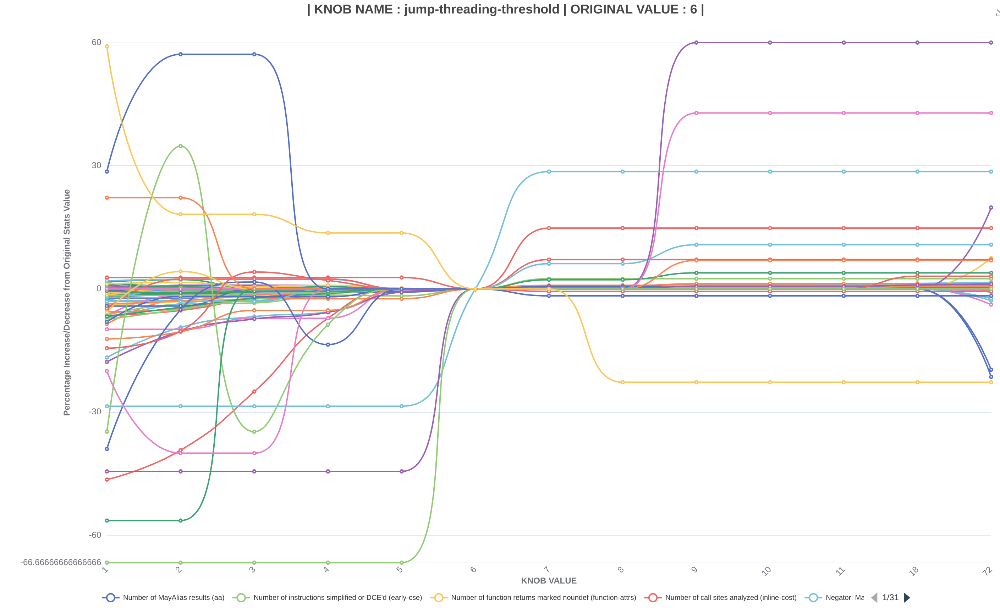
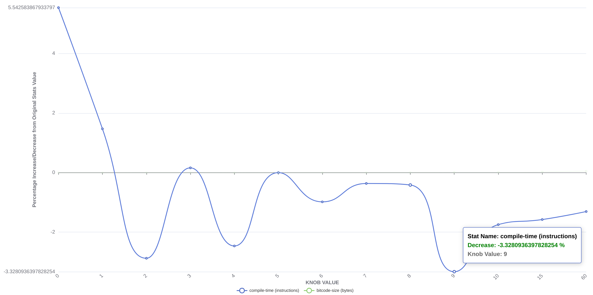
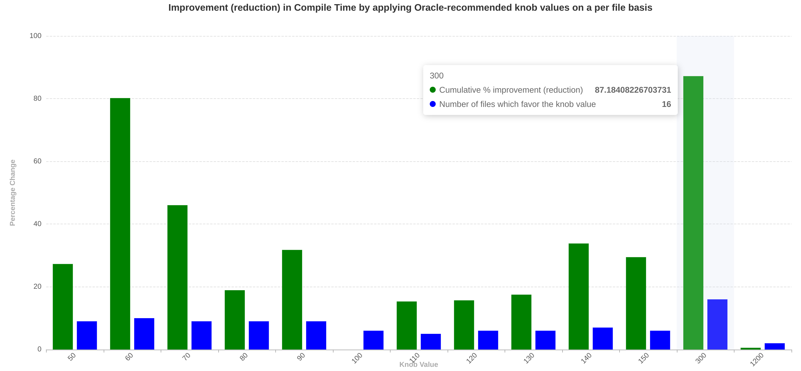
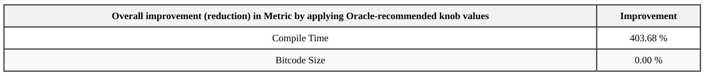

Hey everyone! My name is Shourya and I worked on LLVM this summer through GSoC. My project is called The 1001 thresholds in LLVM. The main objective of this project was to study how varying different thresholds in llvm affect performance parameters like compile-time, bitcode-size, execution-time and llvm stats.
LLVM has lots of thresholds and flags to avoid "costly cases". However, it is unclear if these thresholds are useful, their value is reasonable, and what impact they really have. Since there are a lot, one cannot do a simple exhaustive search. An example of work in this direction includes the introduction of a C++ class that can replace hardcoded values which offers control over the threshold, e.g., one can increase the recursion limit via a command line flag from the hardcoded "6" to a different number.
This work explores these knobs, when they are hit, what it means if they are hit, how we should select their values, and if we need more than one value to maximise an object function, e.g., metrics like compile time, size of the generated program, or any statistic that LLVM emits like "Number of loops vectorized". (Note that execution-time is currently not evaluated because input-gen does not work on optimized IR and is thus part of future work.)
We built a clang matcher for which we looked for the following patterns:
to first identify the knobs in the codebase and then use a custom python tool (optimised to deal with I/O and cache bottlenecks) to collect the different stat values in parallel and store them in a json file. After manual selection of interesting knobs, we have so far conducted three studies in which we measure compile-time and bitcode-size along with various other statistics, and present them in the form of interactive graphs. Two of them (on 10,000 and 100 bitcode files) look at average statistics for each knob value while the third one (on 10,000 bitcode files) studies how each file is affected individually by changing knob values. We see some very interesting patterns in these graphs, for instance in the following two graphs, representing the jump-threading-threshold, we can observe improved statistics (top graph) and decreased average compile time (bottom graph) if the knob value is increased.


The per file study proves that there is no one single magic knob value and the optimum, with regards to compile time or code size, depends on the file that is currently being compiled. For instance here we can see that different knob values (for the knob licm-mssa-optimization-cap) give good cumulative compile time improvements for different files. In detail, most files benefit from a knob value of 300 while 60 is the best knob value for the second most files.

We further show that the presence of an oracle that can tell the best knob value for each file can significantly improve the cumulative compile time.

In this project, we explored various thresholds in LLVM—specifically, 93 thresholds using the Clang matcher—and observed that these thresholds are largely file-specific. This indicates that there is no universally optimal value, or even a set of values, that can be applied across different scenarios. Instead, what is needed is an adaptive mechanism within LLVM, an oracle, that can dynamically determine the appropriate threshold values during compilation.
We also experimented with varying thresholds cumulatively by leveraging file-specific information through an LLVM pass. However, after discussions with the mentors, this approach was set aside due to the significant changes it would necessitate across other parts of the LLVM codebase.
As a result, we have not yet categorized different thresholds, such as identifying optimal threshold values for specific file types (e.g., I/O-intensive files). Nonetheless, we provide substantial statistical evidence in the form of LLVM statistics, bitcode size, and compile-time graphs, as well as histograms that examine these variations on a per-file basis. Additionally, a correlation table between knob values and performance metrics further illustrates the significant impact this study could have on improving LLVM's overall performance.
The early results show that we need a better understanding of knob values to maximise various objectives. Our results will provide the community with the first step in developing a guided compilation model attune to the file that is being compiled. We further intend to show how these knobs interact with each other and whether modifying multiple knobs together compounds the benefits or not. One more area of work could be on input-gen that would enable us to collect and study execution-time in our performance parameters.
This project would not have been possible without my amazing mentors, Jan Hückelheim, Johannes Doerfert, the LLVM Foundation admins, and the GSoC admins.